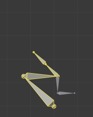

Editing¶
In Pose Mode, bones behave like objects. So the transform actions (move/rotate/scale, etc.) are very similar to the same ones in Object Mode (all available ones are regrouped in the submenu). However, there are some important specificities:
- Bones’ relationships are crucial (see Parenting).
- The “transform center” of a given bone (i.e. its default pivot point, when it is the only selected one) is its root. Note by the way that some pivot point options seem to not work properly. In fact, except for the 3D Cursor one, all others appear to always use the median point of the selection (and not e.g. the active bone’s root when Active Object is selected, etc.).
Basic Posing¶
As previously noted, bones’ transformations are performed based on the Rest Position of the armature, which is its state as defined in Edit Mode. This means that in rest position, in Pose Mode, each bone has a scale of 1.0, and null rotation and position (as you can see it in the Transform panel, in the 3D Views).

An example of locally-Y-axis locked rotation, with two bones selected.
Moreover, the local space for these actions is the bone’s own one (visible when you enable the Axes option of the Armature panel). This is especially important when using axis locking, for example, there is no specific “bone roll” tool in Pose Mode, as you can rotate around the bone’s main axis just by locking on the local Y axis R Y Y… This also works with several bones selected; each one is locked to its own local axis!
When you pose your armature, you are supposed to have one or more objects skinned on it! And obviously, when you transform a bone in Pose Mode, its related objects or object’s shape is moved/deformed accordingly, in real-time. Unfortunately, if you have a complex rig set-up and/or a heavy skin object, this might produce lag, and make interactive editing very painful. If you experience such troubles, try enabling the Delay Deform button of the Armature panel the skin objects will only be updated once you validate the transform operation.
Auto IK¶
Reference
| Mode: | Pose Mode |
|---|---|
| Panel: |
The auto IK option in the Sidebar enables a temporary IK constraint when posing bones. The chain acts from the tip of the selected bone to root of the upper-most parent bone. Note that this mode lacks options, and only works by applying the resulting transform to the bones in the chain.
Clear Transform¶
Reference
| Mode: | Pose Mode |
|---|---|
| Menu: | |
| Hotkey: | Alt-G, Alt-R, Alt-S |
Once you have transformed some bones, if you want to return to their rest position, just clear their transformations.
- Location, Rotation, Scale Alt-G, Alt-R, Alt-S
- Clears individual transforms.
- All
- To clear everything at once.
- Reset Unkeyed
Clears the transforms to their keyframe state. This operator is also available in the menu.
- Only Selected
- Operate on just the selected or all bones.
Note that in Envelope visualization, Alt-S does not clear the scale, but rather scales the Distance influence area of the selected bones (also available through the menu entry, which is only effective in Envelope visualization, even though it is always available…).
Apply¶
Reference
| Mode: | Pose Mode |
|---|---|
| Menu: | |
| Hotkey: | Ctrl-A |
- Pose as Rest Pose
- Conversely, you may define the current pose as the new rest pose (i.e. “apply” current transformations to the Edit Mode), When you do so, the skinned objects/geometry is also reset to its default, undeformed state, which generally means you will have to skin it again.
- Pose Selected as Rest Pose
- Same as Pose as Rest Pose but only applies to selected bones.
- Visual Transform to Pose
- TODO.
- Assign Custom Property Values as Default
- TODO.
In-Betweens¶

In-Betweens Tools.
There are several tools for editing poses in an animation.
There are also in Pose Mode a bunch of armature-specific editing options/tools, like auto-bones naming, properties switching/enabling/disabling, etc., that we already described in the armature editing pages. See the links above…
Push Pose from Breakdown¶
Reference
| Mode: | Pose Mode |
|---|---|
| Tool: | |
| Menu: | |
| Hotkey: | Ctrl-E |
Push Pose interpolates the current pose by making it closer to the next keyframed position.
Push Pose from Rest¶
Reference
| Mode: | Pose Mode |
|---|---|
| Menu: |
Similar to Push Pose from Breakdown but interpolates the pose to the rest position instead. Only one keyframe is needed for this tool unlike two for the other.
Relax Pose to Breakdown¶
Reference
| Mode: | Pose Mode |
|---|---|
| Tool: | |
| Menu: | |
| Hotkey: | Alt-E |
Relax pose is somewhat related to the above topic, but it is only useful with keyframed bones. When you edit such a bone (and hence take it “away” from its “keyed position”), using this tool will progressively “bring it back” to its “keyed position”, with smaller and smaller steps as it comes near it.
Relax Pose to Rest¶
Reference
| Mode: | Pose Mode |
|---|---|
| Menu: |
Similar to Relax Pose to Breakdown but works to bring the pose back to the rest position instead. Only one keyframe is needed for this tool unlike two for the other.
Breakdowner¶
Reference
| Mode: | Pose Mode |
|---|---|
| Panel: | |
| Menu: | |
| Hotkey: | LMB-drag |
Creates a suitable breakdown pose on the current frame.
The Breakdowner tool can be constrained to work on specific transforms and axes, by pressing the following keys while the tool is active:
- G, R, S: move, rotate, scale
- B: Bendy bones
- C: custom properties
- X, Y, Z: to the corresponding axes
Copy/Paste Pose¶
Reference
| Mode: | Pose Mode |
|---|---|
| Menu: | , , |
| Hotkey: | Ctrl-C Ctrl-V Shift-Ctrl-V |
Blender allows you to copy and paste a pose, either through the Pose menu, or by using hotkeys.
- Copy Current Pose
- Copy the current pose of selected bones into the pose buffer.
- Paste Pose
- Paste the buffered pose to the currently posed armature.
- Paste X-Flipped Pose
- Paste the X axis mirrored buffered pose to the currently posed armature.
Here are important points:
- This tool works at the Blender session level, which means you can use it across armatures, scenes, and even files. However, the pose buffer is not saved, so you lose it when you close Blender.
- There is only one pose buffer.
- Only the selected bones are taken into account during copying (i.e. you copy only selected bones’ pose).
- During pasting, on the other hand, bone selection has no importance.
The copied pose is applied on a per-name basis
(i.e. if you had a
forearmbone selected when you copied the pose, theforearmbone of the current posed armature will get its pose when you paste it – and if there is no such named bone, nothing will happen…). - What is copied and pasted is in fact the position/rotation/scale of each bone, in its own space.
This means that the resulting pasted pose might be very different from the originally copied one, depending on:
- The rest position of the bones,
- and the current pose of their parents.

The rest position of our original armature. |

The rest position of our destination armature. |

The first copied pose (note that only two bones are selected and hence copied). |

…pasted on the destination armature… |

…and mirror-pasted on the destination armature. |

The same pose as above is copied, but this time with all bones selected, … |

… pasted on the destination armature… |

…and mirror-pasted on the destination armature. |
Propagate¶
Reference
| Mode: | Pose Mode |
|---|---|
| Menu: | |
| Hotkey: | Alt-P |
The Propagate tool copies the pose of the selected bones on the current frame over to the keyframes delimited by the Termination Mode. It automates the process of copying and pasting.
Options¶
- Termination Mode
Modes which determine how it decides when to stop overwriting keyframes.
- While Held
- The most complicated of the modes available, as it tries to guess when to stop propagating by examining the pauses in the animation curves per control (i.e. all F-curves for a bone, instead of per F-curve).
- To Next Keyframe
- Simply copies the pose to the first keyframe after (but not including any keyframe on) the current frame.
- To Last Keyframe
- Will simply replace the last keyframe (i.e. making action cyclic).
- Before Frame
- To all keyframes between current frame and the End frame option. This option is best suited for use from scripts due to the difficulties in setting this frame value, though it is possible to set this manually via the Adjust Last Operation panel if necessary.
- Before Last Keyframe
- To all keyframes from current frame until no more are found.
- On Selected Keyframes
- Will apply the pose of the selected bones to all selected keyframes.
- On Selected Markers
- To all keyframes occurring on frames with Scene Markers after the current frame.
- End Frame
- Defines the upper-bound for the frame range within which keyframes will be affected (with the lower bound being the current frame).
Show/Hide¶
Reference
| Mode: | All Modes |
|---|---|
| Panel: | |
| Menu: |
You do not have to use bone layers to show/hide some bones. As with objects, vertices or control points, you can use H:
- H will hide the selected bone(s).
- Shift-H will hide all bones but the selected one(s).
- Alt-H will show all hidden bones.
You can also use the Hide checkbox of the .
Note that hidden bones are specific to a mode, i.e. you can hide some bones in Edit Mode, they will still be visible in Pose Mode, and vice versa. Hidden bones in Pose Mode are also invisible in Object Mode. And in Edit Mode, the bone to hide must be fully selected, not just his root or tip.